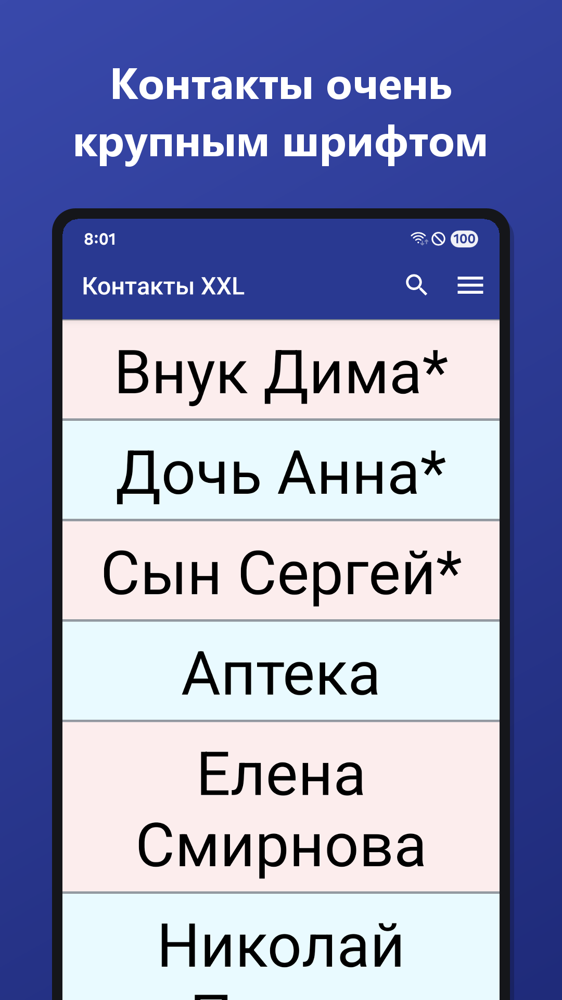
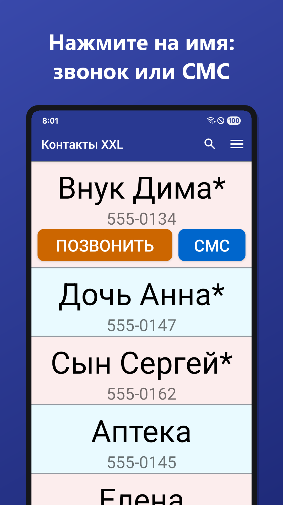
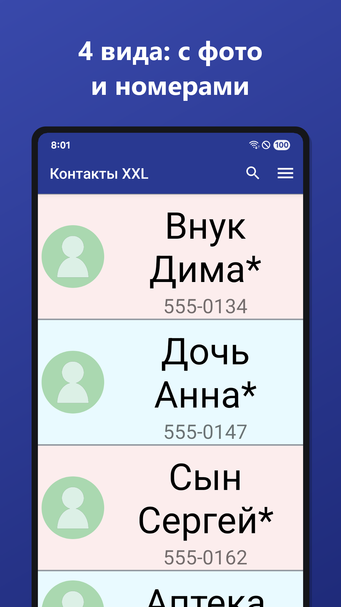
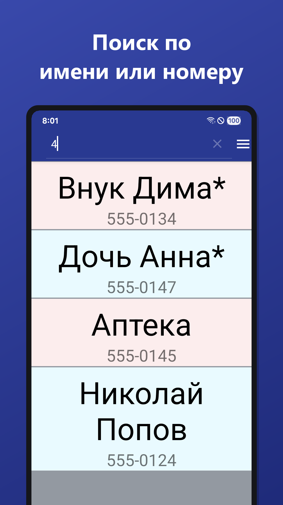
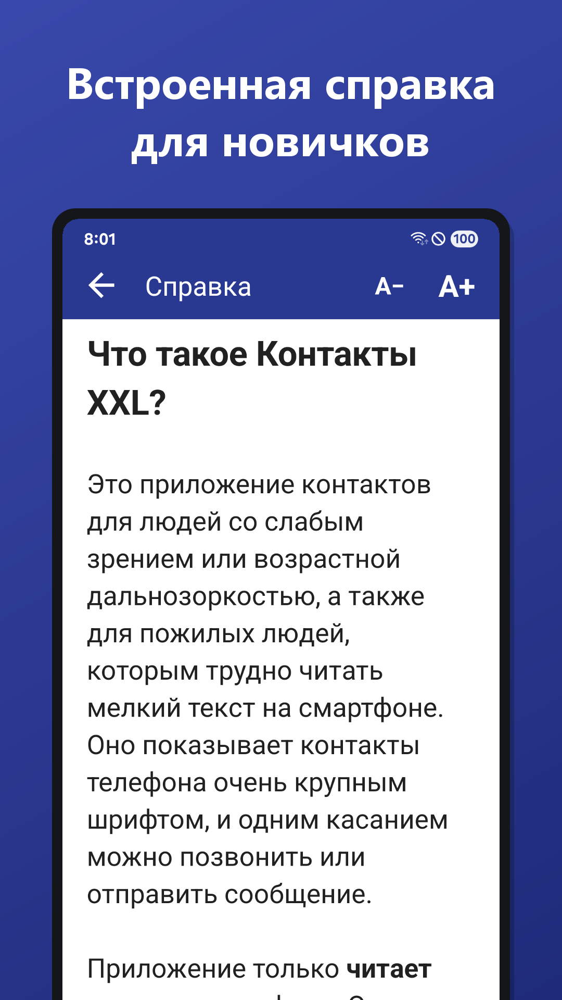

Мелкий шрифт на телефоне мешает звонить близким?
Контакты XXL — приложение контактов для людей со слабым зрением или возрастной дальнозоркостью и для пожилых людей. Оно показывает контакты телефона очень крупным шрифтом, а позвонить или написать сообщение можно одним касанием.
Очень крупный шрифт
- Имена контактов занимают весь экран и легко читаются.
- 8 размеров шрифта. Меняйте по шагу кнопками «Шрифт крупнее» и «Шрифт мельче» в меню (☰).
- Используется размер, выбранный в этом приложении, независимо от размера шрифта в настройках телефона.
- Выбранный размер и вид сохраняются до следующего запуска.
Нажмите — и звоните или пишите
- Нажмите на имя, и появятся большие кнопки ПОЗВОНИТЬ и СМС.
- ПОЗВОНИТЬ открывает приложение «Телефон» с уже набранным номером. Звонок начнётся только после ещё одного нажатия кнопки вызова — так меньше случайных звонков.
4 вида
- Только имя / Имя + номер / Фото + имя / Фото + имя + номер
- Фото контактов показываются в кружке.
Легко найти
- Избранные родные и друзья (со звёздочкой) идут первыми, затем все остальные по имени.
- Нажмите на лупу и введите часть имени или номера.
Просто с первого дня
- Если при первом запуске разрешить доступ, контакты загрузятся сразу.
- «Справка» в меню подробно объясняет всё крупным шрифтом. Текст справки можно увеличить кнопками A− / A+.
10 языков
- Русский, английский, корейский, китайский (упрощённый), японский, испанский, немецкий, французский, хинди и арабский.
- Приложение использует язык телефона, а в меню «Язык (Language)» можно выбрать другой язык только для этого приложения.
Безопасно
- Только читает контакты телефона. Никогда не добавляет, не изменяет и не удаляет их.
- Нет разрешения на доступ в интернет, поэтому контакты никуда не отправляются.
- Без рекламы.
- Только одно разрешение: Контакты.
Полезно знать
- После того как вы добавили или изменили контакты в телефоне, нажмите в меню «Импорт контактов».
Установите приложение на телефон родителям — им будет легко звонить семье с крупным шрифтом.
Скачать в Google Play (бесплатно)